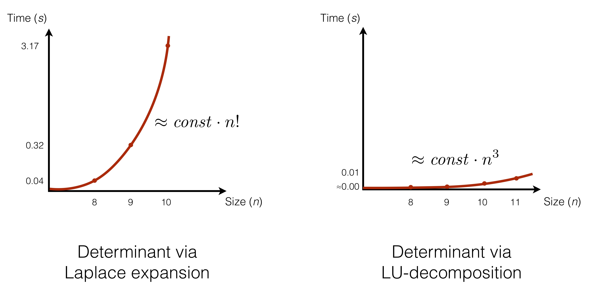

3.2. Complexity of Algorithms¶
Having experimented with different implementations of computing a determinant of a matrix, via Laplace expansion of LU-decomposition, we have observed that the performance in the former case is significantly worse than in the latter one, roughy illustrated by the plots above:
{kind=link}
While the absolute execution time might differ depending on the performance of the computer that executes the program, what is important is how quickly the performance deteriorates, as we increase the size of the input (i.e., the rank of the matrix, in this case).
Our goal is, thus, to estimate how slow/fast are our algorithms (i.e., what is their time demand). For this, we will use mathematical functions of the input size to describe time demand of a specific algorithm. Specifically, we want to formulate time demand (aka algorithmic complexity) functions in a Machine-independent way, focusing on the asymptotic growth, rather than its exact values (different for each CPU).
The machine-independent demand is characterised by the formal conventions, taken in order to make the reasoning uniform:
- Elementary operations take different time on various machines, but this difference does not matter for the relative time demand.
- A machine-independent measure of time is given by counting elementary operations (not their time). Examples of elementary operations include: addition, multiplication, AND, OR, comparisons, assignments.
- In some cases it is common to neglect “cheaper” elementary operations, focusing only on more “expensive” ones (e.g., multiplication beats addition).